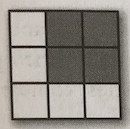
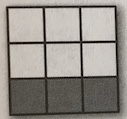
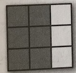
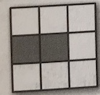

Introduction to Pandas Data Structures
Contents
Introduction to Pandas Data Structures#
To understand Pandas, which is hard, it is helpful to start with the data structures. In this module we will be covering the following topics:
Series - For one dimensional data (lists)
Dataframe - For two dimensional data (spreadsheets)
Index - For naming, selecting, and transforming data within a Pandas Series or Dataframe (column and row names)
# import pandas
## Remember to import pandas with new notebooks!
import pandas as pd
Series#
A one-dimensional array of indexed data
Kind of like a blend of a Python list and dictionary
You can create them from a Python list
# creating a series using the top-level pandas function
# Put the cursor inside the parentheses and hit shift-enter
pd.Series()
/var/folders/v9/vyyhxg7x1w3ftnfc1c558ngw0000gn/T/ipykernel_54624/3160803186.py:3: FutureWarning: The default dtype for empty Series will be 'object' instead of 'float64' in a future version. Specify a dtype explicitly to silence this warning.
pd.Series()
Series([], dtype: float64)
# Create a regular Python list
my_list = [0.25, 0.5, 0.75, 1.0]
# Transform that list into a Series
data = pd.Series(my_list)
# Display the data in the series
data
0 0.25
1 0.50
2 0.75
3 1.00
dtype: float64
A Series is a list-like structure, which means it is ordered
You can use indexing to grab items in a Series, just like a list
Those numbers next to the other numbers, that is the index to the series
It is best to use the
ilocmethod to grab elements by their location in the series.
# grab the first element
data[0]
0.25
# grab the first element using iloc
data.iloc[0]
0.25
# grab the 4th elemenet
data.iloc[3]
1.0
Quick Exercise#
How might we grab the last element if we didn’t know the length of the list?
# hint: think small
data.iloc[???]
Input In [7]
data.iloc[???]
^
SyntaxError: invalid syntax
Also, like lists, you can use slicing notation to grab sub-lists
Again, it is best to use the
.ilocmethod
Quick Exercise#
Use slices to grab the 2nd and 3rd elements of this series
# hint: the 2nd & 3rd elements are 0.50 and 0.75
# your code below
data.iloc[???]
Index by name#
Series also act like Python dictionaries, ordered python dictionaries
This means you can grab things by name in addition to location
# Create a regular Python Dictionary
population_dict = {'California': 38332521,
'Texas': 26448193,
'New York': 19651127,
'Florida': 19552860,
'Illinois': 12882135}
# Transform that dictionary into a Series
population = pd.Series(population_dict)
# Display the data
population
California 38332521
Texas 26448193
New York 19651127
Florida 19552860
Illinois 12882135
dtype: int64
You can also create a named series with multiple lists
# create two ordered lists
population_list = [38332521, 26448193, 19651127, 19552860, 12882135]
states = ['California', 'Texas', 'New York', 'Florida', 'Illinois']
# Create a Series from those two lists
population = pd.Series(population_list, index=states)
# display the data
population
California 38332521
Texas 26448193
New York 19651127
Florida 19552860
Illinois 12882135
dtype: int64
You can use indexing and slicing like above, but now with keys instead of numbers!
It is best to use the
.locmethod when looking up things by name instead of by number
population['California']
38332521
# select the data value with the name "California"
population.loc['California']
38332521
# What happens if you try an use a name when it wants
population.iloc['California']
---------------------------------------------------------------------------
TypeError Traceback (most recent call last)
<ipython-input-11-930d9bc91801> in <module>()
1 # What happens if you try an use a name when it wants
----> 2 population.iloc['California']
c:\program files (x86)\microsoft visual studio\shared\python36_64\lib\site-packages\pandas\core\indexing.py in __getitem__(self, key)
1476
1477 maybe_callable = com._apply_if_callable(key, self.obj)
-> 1478 return self._getitem_axis(maybe_callable, axis=axis)
1479
1480 def _is_scalar_access(self, key):
c:\program files (x86)\microsoft visual studio\shared\python36_64\lib\site-packages\pandas\core\indexing.py in _getitem_axis(self, key, axis)
2093 # a single integer
2094 else:
-> 2095 key = self._convert_scalar_indexer(key, axis)
2096
2097 if not is_integer(key):
c:\program files (x86)\microsoft visual studio\shared\python36_64\lib\site-packages\pandas\core\indexing.py in _convert_scalar_indexer(self, key, axis)
259 ax = self.obj._get_axis(min(axis, self.ndim - 1))
260 # a scalar
--> 261 return ax._convert_scalar_indexer(key, kind=self.name)
262
263 def _convert_slice_indexer(self, key, axis):
c:\program files (x86)\microsoft visual studio\shared\python36_64\lib\site-packages\pandas\core\indexes\base.py in _convert_scalar_indexer(self, key, kind)
1635
1636 if kind == 'iloc':
-> 1637 return self._validate_indexer('positional', key, kind)
1638
1639 if len(self) and not isinstance(self, ABCMultiIndex,):
c:\program files (x86)\microsoft visual studio\shared\python36_64\lib\site-packages\pandas\core\indexes\base.py in _validate_indexer(self, form, key, kind)
4126 pass
4127 elif kind in ['iloc', 'getitem']:
-> 4128 self._invalid_indexer(form, key)
4129 return key
4130
c:\program files (x86)\microsoft visual studio\shared\python36_64\lib\site-packages\pandas\core\indexes\base.py in _invalid_indexer(self, form, key)
1846 "indexers [{key}] of {kind}".format(
1847 form=form, klass=type(self), key=key,
-> 1848 kind=type(key)))
1849
1850 def get_duplicates(self):
TypeError: cannot do positional indexing on <class 'pandas.core.indexes.base.Index'> with these indexers [California] of <class 'str'>
Like a Python dictionary, a Series is a list of key/value pairs
But these are ordered, which means you can do slicing
Quick Exercise#
Try slicing this series, but with keys instead of numbers!
Select a subset of the data using the Python slicing notation
Don’t forget, use
loc!
# Hint: Use the same : notation, but use the state names listed above
# Your code here:
population.loc["California" : "New York"]
California 38332521
Texas 26448193
New York 19651127
dtype: int64
# Try some numeric slicing if you'd like
population.iloc[0:3]
California 38332521
Texas 26448193
New York 19651127
dtype: int64
DataFrame#
DataFramesare the real workhorse of Pandas and Python Data ScienceWe will be spending a lot of time with data inside of Dataframes, so buckle up!
DataFramescontain two-dimensional data, just like an Excel spreadsheetIn practice, a
DataFrameis a bunch ofSerieslined up next to each other
# Start with our population Series
population
California 38332521
Texas 26448193
New York 19651127
Florida 19552860
Illinois 12882135
dtype: int64
# Then create another Series for the area
area_dict = {'Illinois': 149995, 'California': 423967,
'Texas': 695662, 'Florida': 170312,
'New York': 141297}
area = pd.Series(area_dict)
area
Illinois 149995
California 423967
Texas 695662
Florida 170312
New York 141297
dtype: int64
# Create a dictionary with a key:value for each column
state_info_dictionary = {'population': population,
'area': area}
# Now mash them together into a DataFrame
states = pd.DataFrame(state_info_dictionary)
# Display the data
states
| population | area | |
|---|---|---|
| California | 38332521 | 423967 |
| Florida | 19552860 | 170312 |
| Illinois | 12882135 | 149995 |
| New York | 19651127 | 141297 |
| Texas | 26448193 | 695662 |
Pandas automatically lines everything up because they have shared index values
# create a list of dictionaries that contain our data.
# one dictionary per observation/row
dead_people = [
{"ssn":1, "first_name": "Bob", "last_name": "Jones", "age": 200},
{"ssn":2, "first_name": "Jane", "last_name": "Jones", "age": 199},
{"ssn":3, "first_name": "Ethel", "last_name": "Jones", "age": 180},
{"ssn":4, "first_name": "Hortense", "last_name": "Jones", "age": 178},
{"ssn":5, "first_name": "Vern", "last_name": "Jones", "age": 178}
]
# create a Dataframe from a list of dictionaries
pd.DataFrame(dead_people)
| age | first_name | last_name | ssn | |
|---|---|---|---|---|
| 0 | 200 | Bob | Jones | 1 |
| 1 | 199 | Jane | Jones | 2 |
| 2 | 180 | Ethel | Jones | 3 |
| 3 | 178 | Hortense | Jones | 4 |
| 4 | 178 | Vern | Jones | 5 |
# create a list of lists, each sub-list is an observation/row
dead_people = [
[1,"Bob","Jones",200],
[2,"Jane","Jones",199],
[3,"Ethel","Jones",180],
[4,"Hortense","Jones",178],
[5,"Vern","Jones",178]
]
# specify the column names seperately
column_names = ["ssn","first_name", "last_name", "age"]
# make a Dataframe with column names specified separately
pd.DataFrame(dead_people, columns=column_names)
| ssn | first_name | last_name | age | |
|---|---|---|---|---|
| 0 | 1 | Bob | Jones | 200 |
| 1 | 2 | Jane | Jones | 199 |
| 2 | 3 | Ethel | Jones | 180 |
| 3 | 4 | Hortense | Jones | 178 |
| 4 | 5 | Vern | Jones | 178 |
# create a list of lists, each sub-list is an observation/row
dead_people = [
[1,"Bob","Jones",200],
[2,"Jane","Jones",199],
[3,"Ethel","Jones",180],
[4,"Hortense","Jones",178],
[5,"Vern","Jones",178]
]
# specify the column names seperately
column_names = ["ssn","first_name", "last_name", "age"]
row_ids = [123,3452,3235,4345,563463]
# make a Dataframe with column names specified separately
dead_dataframe = pd.DataFrame(dead_people, columns=column_names, index=row_ids)
dead_dataframe
Index#
Pandas
SeriesandDataFramesare containers for dataThe Index (and Indexing) is the mechanism to make that data retrievable
In a
Seriesthe index is the key to each value in the listIn a
DataFramethe index is the column names, but there is also an index for each rowIndexing allows you to merge or join disparate datasets together
states
You can programmatically access the column and row lables by calling the following functions
# get the column lables as a list-like data structure
states.columns
# get the row labls as a list-like data structure
states.index
The
locmethod I talked about above allows us to select specific rows and columns by name.Use the syntax
[<row>,<column>]with index values
# Get the value of the population column from Illinois
states.loc["Illinois", "population"]
We can also be tricky and use more advanced syntax to do more advanced queries.
You can do any kind of list slicing in place of
<row>or<column>to slice rows and columns
# Get the area for states from Florida to Texas
# this is two dimensional slicing
states.loc["Florida":"Texas", "area"]
# Get the area for Florida and Texas
# Use a list to select multiple specific values
states.loc[["Florida", "Texas"], "area"]
# Get area and population for Florida and Texas
# use a ":" to specify "all columns"
states.loc[["Florida", "Texas"], :]
# select all the rows and columns
states.loc[:,:]
What is happening here is we are passing a list of names for the rows, and using the colon “:” to say “all columns
We can do the same thing with column numbers using
iloc
# Get the area for states from Florida to Texas
# this is two dimensional slicing
states.iloc[1:, 1]
# Get the area for Florida and Texas
# Use a list to select multiple specific values
states.iloc[[1, 4], 1]
# Get the area for Florida and Texas
# Use a list to select multiple specific values
states.iloc[[1, -1], 1]
# Get area and population for Florida and Texas
# use a ":" to specify "all columns"
states.loc[[1, -1], :]
Practice Questions#
Exercise#
Using the
ilocand slicing syntax slice the following dataframe based on the highlighted blocks in the imagefirst think of the slicing syntax to grab just the rows you want THEN think of the slicing syntax for the columns you want
Put the row slices before the comma and the column slices after the comma
# This is our example Dataframe
indexing_example = pd.DataFrame([[1,2,3],[4,5,6],[7,8,9]])
indexing_example

Select the second two columns of the first two rows.
# Put the slicing syntax in your answer here
indexing_example.iloc[???]
# scratch space

Select the third row
# Put the slicing syntax in your answer here
indexing_example.iloc[???]
# scratch space

Select the first two columns
# Put the slicing syntax in your answer here
indexing_example.iloc[???]
# scratch space

Select the first two columns of the second row
# Put the slicing syntax in your answer here
indexing_example.iloc[???]
# scratch space
Exercise#
Using the
ilocand slicing syntax slice the following dataframe based on the highlighted blocks in the imagefirst think of the slicing syntax to grab just the rows you want THEN think of the slicing syntax for the columns you want
Put the row slices before the comma and the column slices after the comma
# This is our example Dataframe
indexing_example = pd.DataFrame([[1,2,3],[4,5,6],[7,8,9]])
indexing_example
Select the second two columns of the first two rows.
# Put the slicing syntax in your answer here
indexing_example.iloc[:2, 1:]
# scratch space
Select the third row
# Put the slicing syntax in your answer here
indexing_example.iloc[2, :]
# scratch space
Select the first two columns
# Put the slicing syntax in your answer here
indexing_example.iloc[:,:2]
# scratch space
Select the first two columns of the second row
# Put the slicing syntax in your answer here
indexing_example.iloc[1,:2]
# scratch space